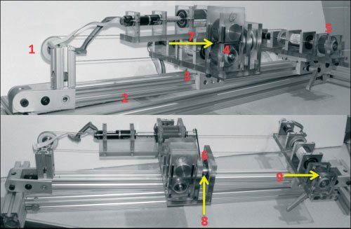

Academic bedside robots · buffalo_seta_srimathveeravalli2010
SETA
SETA (System for Endovascular Teleoperated Access)

1 / 4


- Family
- Academic bedside robots (academic)
- Devices
- guidewire and catheter simultaneously, any standard device 0.014-0.13 in (friction-wheel range); bench: 0.035 in guidewire + 5 Fr Boston Scientific Expo catheter (Results); VIST trial: the manual angiogram (0.035 / 0.014 in Emerald guidewires, 5 Fr Tempo Aqua catheter) repeated with SETA
- Degrees of freedom
- 3 motorised: guidewire insert/withdraw, catheter insert/withdraw, catheter twist (three Maxon EC-22 motors); a travelling cart carrying the guidewire drive and the steering stage runs on a pulley (Design of patient-side slave, Actuators; Fig. 2)
- Push
- Friction rollers
- Twist
- Rotating clamp
- Tested up to
- Phantom
- Sim-to-real
- None found — No simulation-trained controller found for this robot.
Testing
- Highest level
- Phantom
- What was tested
- bench: step inputs to 30/60/90 mm at 1000/2500/5000 rpm, 15 repeats each, plus ramps (Fig. 6); steering 1 deg steps over 360 deg, 10 cycles each way on a 5 F catheter (Fig. 7); phantom: teleoperated 0.035 in guidewire in a silicone vessel with one bifurcation (Fig. 8); VIST simulator: 8 neurovascular surgeons and fellows (7 M, 1 F, mean 500 cases) repeated a carotid angiogram, procedure time 87.42 s robotic vs 80.57 s manual (p = 0.829), contrast 7 vs 5.75 cc (p = 0.723), 1 participant did not finish; questionnaire 2.25-3.0 of 4 (Table 3, Fig. 11). In vivo animal studies only planned (Abstract, Conclusion)
- Key numbers
- insertion slip < 0.4 mm per 100 mm; teleoperated phantom lag < 0.003 in; back-slip force 0.76 N (4x below the 3 N tool limit, so buckling stays outside the lumen); EC-22 motors 18,000 rpm max with 1:128 gearhead (~3 Nm); friction-wheel assembly 130 g; teleoperation 500 Hz; master spec from motion study: 28.5 mm stroke, 4.5 N, 13 Hz hand motion (Slave actuators, Teleoperation, Results)
Mechanism
- Push (translation)
- friction-roller: driven lower + idler upper 2 in polyurethane wheels (Shore 55A, mu ~0.6), spring-tensioned self-adjusting housing, normal load 1.275 N (Slave actuators; Fig. 3)
- Twist (rotation)
- catheter only: miniature gripper of brass roller pins on O-ring-tensioned steel shafts (transmits torque, allows axial slip) turned by a pulley from a servomotor and torque sensor (Slave actuators; Fig. 4)
- Device range
- 0.014-0.13 in (Slave actuators)
- Target anatomy
- neurovascular / endovascular access (design data from femoral-to-internal-carotid angiograms in rabbits and on VIST; srimathveeravalli2010_design Materials and Methods)
Sensing and interface
- Force sensing
- proximal: LXT 971 torque sensor (Cooper Instruments, +/-2.5 Nm, 0.005 Nm resolution) between each motor and its wheel/pulley, converted to axial and radial tool forces (Slave actuators; Teleoperation)
- Leader and haptics
- Novint Falcon; twist mapped to left-right stylus motion; force-reflecting loop at 500 Hz with Butterworth tremor filter (5-25 Hz), motion scaling and delay term (Teleoperation and haptic feedback, Eq. 1, Fig. 5)
- Imaging
- N.R.
- Sterility
- N.R.
Size
- Footprint (mm)
- N.R.
- Mass (kg)
- N.R.
Simulation
- Simulation model
- none found (VIST simulator used as the test patient, not a model of SETA)
- Sim-trained controller
- none found
Versions
- Lineage
- 2010 IJMRCAS (full); the same PI's later SAER robot (UIUC/Buffalo) is robots_A3 saer_sankaran2018; Ashammagari et al. 2016 IMECE automated aortic-arch access on the VIST simulator used a 7-DOF Robai Cyton arm, neither SETA nor SAER (ashammagari2016_image, full)
Sources
- Design and fabrication of a robotic mechanism for remote steering and positioning of interventional devices · The International Journal of Medical Robotics and Computer Assisted Surgery, 2010 · doi:10.1002/rcs.301 [srimathveeravalli2010_design]
- Image Guided Automation of Endovascular Robotic Surgery · Volume 14: Emerging Technologies; Materials: Genetics to Structures; Safety Engineering and Risk Analysis, 2016 · doi:10.1115/imece2016-65922 [ashammagari2016_image]
- Current and Emerging Robot-Assisted Endovascular Catheterization Technologies: A Review · Annals of Biomedical Engineering, 2014 · doi:10.1007/s10439-013-0946-8 [rafiitari2014_current]
Notes
- Notes
- Predecessor of SAER in the Kesavadas group. No picture: Wiley paper not downloaded. | 2026-11-08 X3: full text read. The rabbit work in the paper is the manual motion-capture study (2 radiologists, 15 datasets), not a robot test, so validation stays phantom. Slave on a passive articulated arm for orientation at the cannula; authors list footprint reduction and a twisting master as open items (Conclusion). The paper's Table 1 surveys 8 earlier systems
This record
- Read level
- full — full (srimathveeravalli2010_design,, hand-downloaded 2026-11-08)
- Picture
- srimathveeravalli2010_design Fig. 2 (patient-side slave, two photographs), p. 164, IJMRCAS 2010 doi:10.1002/rcs.301 ↗ — licence: publisher copyright; grade C
- Picture changes
- native extract (the PDF embeds the figure at 500 x 327); no crop; nothing erased; not upscaled
- Found by
- gap: Gap searches for robots the other searches missed.
- Data
- JSON · YAML:
records/robots/buffalo_seta_srimathveeravalli2010.yaml - Correction
- Suggest a correction [repository not created yet]